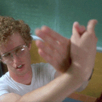

REFLECTIONS
I usually use the internet for school work and entertainment. Most of the time I am on my computer, I am working
on assignments for school. I have a few projects I work on for fun also.

In this screenshot, my girlfriend and I (we met in highschool), were talking about
highschool and showing each other pictures and things we liked back then like music
and movies. I forgot about glanceback and it was funny explaining the idea. I was
using the internet to show things I liked in my past.

In this screenshot, I was trying to legally stream ufc, but that week, the legal website had been taken down
which was a big deal, because it was pretty big. Places said they were still up but I couldn’t find it
anywhere. I was trying to find a different legal website but they were all so terrible and I was sad. I was
using the internet to try to watch a sports stream.
Reflecting on the handmade web and website is a shifting house next to a river of knowledge articles, I
still have hope one day the internet will become a safe and creative space. If it is possible to one day see
an era where people create their own websites and create their art, that would be a good time. I hope the
internet will be a safe place for people to express themselves and enjoy learning, entertainment, engage
socially, and not have it be about corporations or selling. I hope online communities flourish into
something positive and not into brainrot and slop.

I think there is a big contrast between life online and life in real life. I always think about the
spectacle that we read about. I like real life, because things online never seem to have the same impact.
Online, we are exposed to so many things it can make us forget about what's really in front of us. I’ve been
trying to become more present recently and I notice how hard life online has a grasp on everyday life. From
filling the time for the bus ride or responding to a friend, it is a great luxury that I often take for
granted. However, when I feel myself slipping too far into my digital world, I need to take a break and
breathe into the real world. This assignment helped me change my perspective on how I approach the internet,
not just as a consumer, but also a creator.